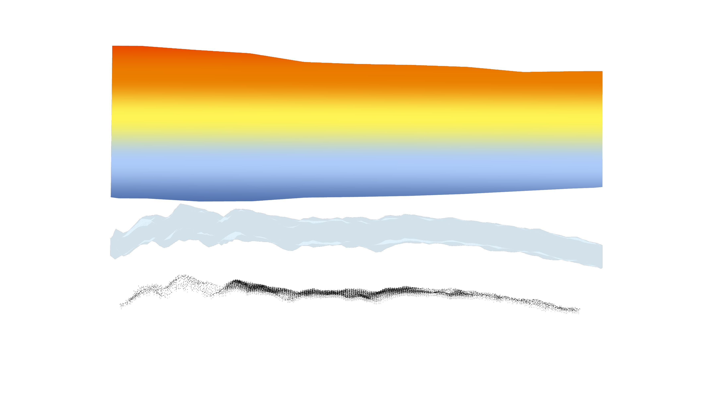

Multi-Dimensional Climate Models
Tools for modeling and fabricating with Google Earth Engine geospatial data.
Project Details / Background
Standard GIS to Rhino 3D modeling workflows are typically designed to pass only a single depth of dimensional raster imagery data, such as a digital elevation model for the creation of a terrain surface, and without ability for easy temporal visualization. As open source spatial resouces such as Google Earth Engine becomes an increasingly important repository for atmospheric and climate change data, and these data require multiple dimensions to visualize and interpret responsibly, designers deserve tools that allows greater access to the world of geospatial imagery
This project developed a method and workflow for modeling multiple dimensions of Google Earth Engine geospatial data in Rhino, ultimately enabling the fabrication of six climate "transparencies" for changing years from 2012 to 2062 over Fort Ord national monument in Monterey County CA. It employed javascript server queries the web based Google Earth Engine Code for downloading and comiling data, the Heron grasshopper plugin for importing data, and custom C# and grasshopper workflows for translating data and creating stacked visualizations of projected minimum temp, maximum temp, and precipitation according to NASA Downscaled Climate Projection Models. The climate transparencies were then prepared as watertight, colored meshes for multimaterial 3D printing using Stratasys J55 printers.
Image Gallery
 A sample visualization and code export from GEE Code.
A sample visualization and code export from GEE Code.

Minimum Temperature and Maximum Temperature Transposed in 3D space.
Min and max temperature range closed mesh, showing varying temperature range conditions from mountains to coast.

Preparation of printable slide representing min and max temperatures, precipitation, and site conditions for 2012.
Printable slide representing the same projected conditions for 2062.
Voxelized field conditions for the Fort Ord site in Seaside, CA, including unexploded military ordinance and an eventual pine forest.
Printed slides, representing 2012, 2022, 2032, 2042, 2052, and 2062 in climate and design project years.
Slides can be stacked front to back.
Or compared sectionally from the side.